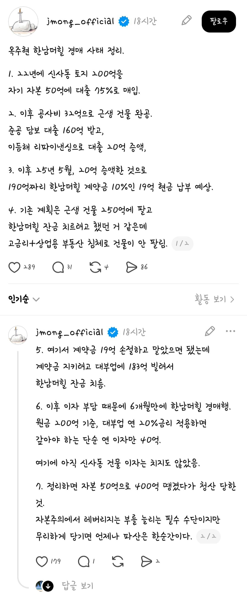

와... 연예인은 사는 세계가 다르구만

와... 연예인은 사는 세계가 다르구만
말로만 듣던 부동산 투기네 ㅉㅉ
연예인들 페이가 넘쌔니까, 드라마 산업도 같이 무너지지 ㅉㅉ
정부한테 정부지원해달래냐 ㅉㅉ 연예인 페이를 좀 깍아라
나도 대출해 줘라.
우리회사도 야적장 구매하는데 100억짜리 신용도좋고 매출좋으니 90억대출나오더라
뮤지컬 존나 돌겠네
대부업에서 183억 나가는것도 대단하네.. 내가 아는 미즈사랑 뭐 이런데서 나간건가?..
대부업에서 근 200억 연예인 이름값인가
건바이건으로 해결한게 아니라 동시진행까지하는 깡다구 ㄷㄷ 저래야 돈버는구나
나같으면 건물 팔리고나서 매입하지 팔릴예정으로 잡고 선계약이런건 못할듯 ㄷ
저래야 버는건 가끔 있는 일이고 저러다 훅가는게 일상 ㅋㅋㅋ
그래도 건물은 갖고있는거아녀? 한남더힐만 날린거고
신사동 건물은 있지 근데 신사동 150억 대출과 이자 +
더힐 183억+19억과 이자 + 경매넘어가면 제값 다 못받으니까 빚으로 산 더힐 200억중에서 수십억손실
건물이 언제 팔릴지도 모르고 매각돼도 원금은 커녕 빚은 다 갚으려나
계약금 손절 안한게 진짜 존나 미련하다 싶다가도
원금이 50억+공사비32억이 거의 전재산이었을텐데 거기서 19억 손절치면 25% 가까이 손실이니까 이해가 될거같기도하고....
막상 저 상황되면 손절못할듯
열심히 뮤지컬 하셔야지 뭐
잘못됨이 욕심 ㅋ
대부업체는 옥주현이름 듣고 좋다고 빌려줬겠네
연예인은 일단 어떻게든 빨아낼수있으니